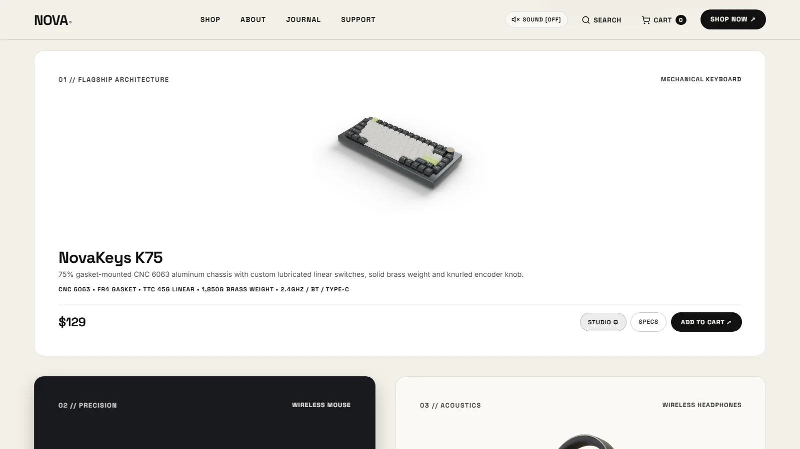
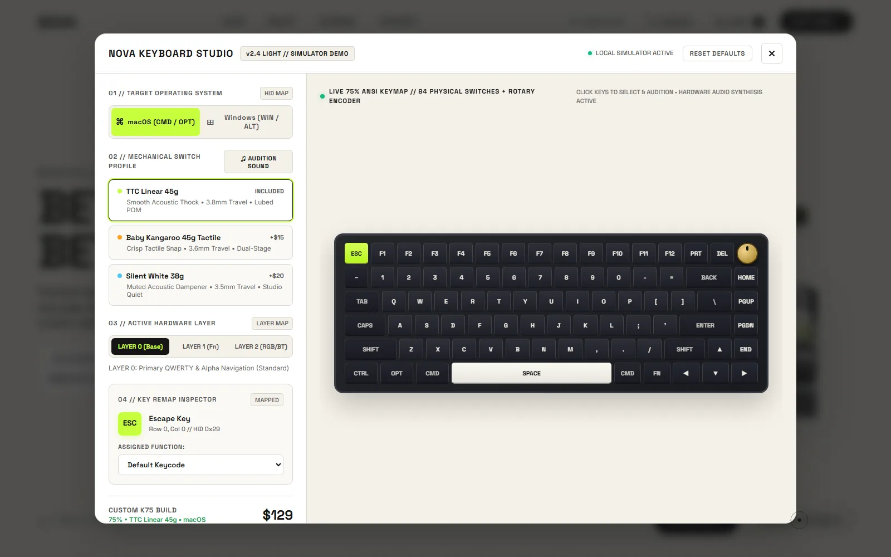
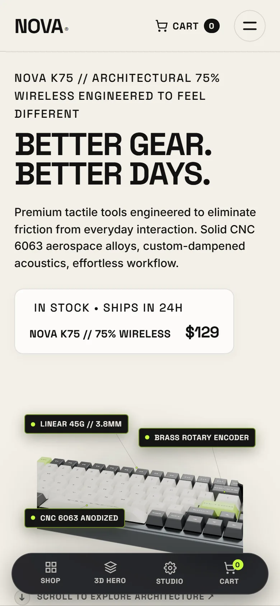

NOVA Gear
Кинематографичная витрина тактильной техники с 3D-орбитой и клавиатурной студией.

Задача
Показать премиальную механику через ощущение материала: вращение, свет, выноски и звук. Не каталог с картинками, а сцена, где продукт хочется рассматривать.
Hero orbit
56 кадров, отрендеренных в Blender Cycles и собранных в WebP, скрабятся по скроллу и драгу с единой инерцией. Выноски включаются в своих диапазонах кадров, поэтому интерфейс не спорит с продуктом.
Заголовок живёт в отдельной колонке и не пересекается с клавиатурой: safe scale оставляет 18% поля на любом угле.
Keyboard Studio
Конфигуратор 75-процентной клавиатуры: macOS и Windows, три профиля свитчей, четыре слоя и переназначение клавиш. Акустика синтезируется через Web Audio API, состояние сохраняется в localStorage.



Mobile / 390 × 844
Что внутри
- Кинематографичный hero с инерционной прокруткой кадров.
- Телеметрия на SVG-выносках, синхронизированная с кадрами.
- Редакционные карточки товаров с раздельными слоями теней.
- Keyboard Studio: раскладки, свитчи, слои, ремап, звук.
- Focus trap в диалогах, reduced motion, адаптив до 320 px.